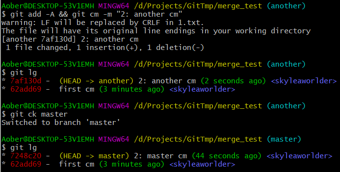

0. 前言
这次是残酷的文档翻译机。
不得不说，git-scm 的东西已经写的很好了。只不过不记下来的话，之后还会忘。
话只说到我看得懂的程度而已，废话不多说了：
1. init
1 | mkdir merge_test && cd merge_test |
最后很明显可以得到：

如果我哪天连这些东西都看不懂，那就可以结束人生了。
2. —abort
我寻思最重要的一定是 --abort。
一开始使用 git 的时候，不免像个 sb 一样。就好似刚开始使用 Verilog HDL。不得不说我就是个 sb，但同时也是个懒汉，发现了问题，不会去花费很大力气解决问题，更不可能去探明问题的本质，而是避重就轻，选择 “尽量之后不去犯这个错”。
貌似是 19 年的 2 月 7 日，我第一次接触 git，到了今天 —— 2020/9/5，我是肯定不会再在两个 branch 上修改同一个文件，然后来 git merge 了。即便真实情况中遇到，肯定也是通过复杂的手段避免了。
今天就权当学习了：
1 | git checkout master |
此时 git 处于 MERGING 状态，具体表现为：(master|MERGING)。
如果想用 git switch 逃避的话，也会得到输出 error: you need to resolve your current index first。
所谓的 HEAD 代表 HEAD 所指的 master，由于我在 master 上 git merge another，所以 master 是 Current，another 是 incoming。个人以为这个还是很重要。
刚才自己多玩了几个参数，结果差点兜不住。
git 给的提示是很好的。让 restore 的地方就暴力点 restore .，让 restore --staged 的地方就 restore --staged .；说 Untracked files 就全都 rm 喽。
只要没进 MERGING，就不用 --abort 办事，不然反而会说 MERGE_HEAD missing。
3. —squash
还是刚刚那个情形：
都在第 2 次提交，master 上有 1.txt，another 上有 2.txt。
接下来是：
1 | git checkout master |
这里可以看到，2.txt 在 暂存区 了！
对 1.txt 处理冲突之后：
1 | git add 1.txt |
1 | git commit -m "Mg: another to master" |
这种量比较小的，我觉得还是比较适合 --squash，尽管 --squash 可以将很多 commit 浓缩成一个。
现在 master 还是 master，原本的 another 还是 another，二者井水不犯河水。
在 git merge --squash 操作的时候，也可以看到当时的 master 分支并没有处于 MERGING 状态，那么自然也不可能通过 --abort 解除了。
因为 --squash 的出现，使得 another 上的所有提交与 master 当前的 status 比较，最后给出了只需一个 commit 就能让原本 log 复杂的情况，变成 master 提交数目仅+1 的情况。
而有关 Merge 的信息，也只会在 master 上，也就是正操作的分支上留下。
4. others
试想如果几天前我就知道 --continue 可以用来让处理完冲突的直接继续 merge；如果几天前我就知道 --no-commit 可以让我好好处理提交，那该多好；同理 --squash，之前是不知道咋用，没想到这么好啊。